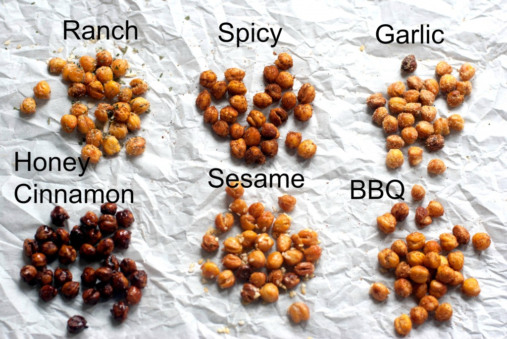

Back
Roasted Chickpeas
Ignore the garlic and sesame one. For the others that have onion/garlic powder, either don't add it or maybe it's a small enough amount it is ok -- up to you. You can also make cheesy ones by putting parmesan on them.
Ingredients
- 2 14-15oz cans of chickpeas (also known as garbanzo beans)
- 2 TBL olive oil
Honey Cinnamon
- 1 tsp ground cinnamon
- 1 TBL granulated sugar
- 2 TBL honey
Spicy
- 1 tsp ground cumin
- 1 tsp chili powder
- ½ tsp cayenne pepper
- ½ tsp sea salt
BBQ
- 2 tsp paprika
- 1 tsp cumin
- 1 tsp chili powder
- 1 tsp onion powder
- 1 tsp garlic powder
- 1 tsp salt
- 3 tsp brown sugar
Ranch
- ¼ Cup Black Pepper
- 1½ Cup Parsley Flakes
- ½ Cup Garlic Salt
- 2 TBL Kosher Salt
- ¼ Cup Granulated Garlic
- ¾ Cup Granulated Onion
- 2 TBL Dill Weed

Instructions
- Drain and rinse your chickpeas. Remove any loose skins off of the beans but don't worry about taking them all off. Just remove the ones that are super loose.
- On a paper towel or towel, evenly spread your beans and let dry. I dried mine for about ½ hour.
- Preheat oven to 400 degrees.
- Line a cookie sheet with either foil or parchment paper.
- Evenly spread your dried beans on cookie sheet
- Bake for 40-60 minutes. It will all depend on your oven. Check after 40 minutes and if they are crunchy, they are done. If they are too moist then cook a little longer but watch so they don't burn.
- After baking, quickly transfer to a bowl and mix with the 2 TBL olive oil.
- Then spread the seasonings of whatever flavor you are using and mix well.
- With the honey cinnamon flavor, after coating, you can put the beans back into the oven for 5 minutes or so to caramelize them.
- With the ranch recipe, mix 2-3 tsp of the whole mix into your baked chickpeas and refrigerate the rest for other recipes.
Source